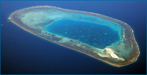
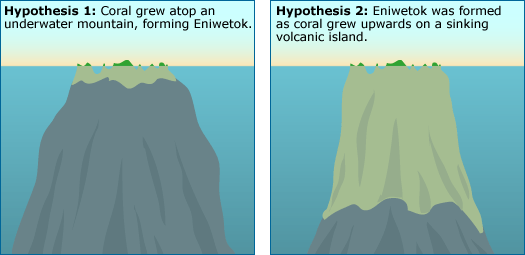

Testing hypotheses and theories is at the core of the process of science. Any aspect of the natural world could be explained in many different ways. It is the job of science to collect all those plausible explanations and to use scientific testing to filter through them, retaining ideas that are supported by the evidence and discarding the others. You can think of scientific testing as occurring in two logical steps: (1) if the idea is correct, what would we expect to see, and (2) does that expectation match what we actually observe? Ideas are supported when actual observations (i.e., results) match expected observations and are contradicted when they do not match.
TESTING IDEAS ABOUT CHILDBED FEVER
As a simple example of how scientific testing works, consider the case of Ignaz Semmelweis, who worked as a doctor on a maternity ward in the 1800s. In his ward, an unusually high percentage of new mothers died of what was then called childbed fever. Semmelweis considered many possible explanations for this high death rate. Two of the many ideas that he considered were (1) that the fever was caused by mothers giving birth lying on their backs (as opposed to on their sides) and (2) that the fever was caused by doctors' unclean hands (the doctors often performed autopsies immediately before examining women in labor).
He tested these ideas by considering what expectations each idea generated. If it were true that childbed fever were caused by giving birth on one's back, then changing procedures so that women labored on their sides should lead to lower rates of childbed fever. Semmelweis tried changing the position of labor, but the incidence of fever did not decrease; the actual observations did not match the expected results. If, however, childbed fever were caused by doctors' unclean hands, having doctors wash their hands thoroughly with a strong disinfecting agent before attending to women in labor should lead to lower rates of childbed fever. When Semmelweis tried this, rates of fever plummeted; the actual observations matched the expected results, supporting the second explanation.
Testing in the tropics
Let's take a look at another, very different, example of scientific testing: investigating the origins of coral atolls in the tropics. Consider the atoll Eniwetok (Anewetak) in the Marshall Islands - an oceanic ring of exposed coral surrounding a central lagoon. From the 1800s up until today, scientists have been trying to learn what supports atoll structures beneath the water's surface and exactly how atolls form. Eniwetok could have formed in several ways:
Hypothesis 1: Coral only grows near the surface of the ocean where light penetrates - so perhaps the coral that makes up Eniwetok grew in a ring atop an underwater mountain, which was itself built by oceanic debris or uplifted through tectonic action.
Hypothesis 2: Another possibility is that Eniwetok originally grew around a volcanic island, which then sunk beneath the surface of the water as the reef continued to grow to the surface. Underwater volcanic activity (i.e., hotspots) can produce an island in the middle of the ocean, as cooled lava builds up around the hotspot. However, tectonic plate movement eventually carries the island off the hotspot, keeping the island from being built up further. Meanwhile, coral organisms grow in a ring in the shallow waters surrounding the exposed volcanic island. As time passes, erosion and tectonic action cause the island to sink slowly (or subside), and as it does, it takes the coral ring with it. However, coral are living organisms and grow their colonies upwards as their substrate sinks. Over time, the island could sink deep below the surface of the water, while the coral continue to thrive, constantly growing towards the surface in their original ring configuration.
Which is a better explanation for Eniwetok? Is it built atop an underwater mountain, or is it a tower of coral growing atop an ancient sunken volcano? Which of these explanations is best supported by the evidence?
If Eniwetok grew atop an underwater mountain, then we would expect the atoll to be made up of a relatively thin layer of coral on top of limestone or basalt. But if it grew upwards around a subsiding island, then we would expect the atoll to be made up of many hundreds of feet of coral on top of volcanic rock. When geologists drilled into Eniwetok in 1951 as part of a survey preparing for nuclear weapons tests, the drill bored through more than 4000 feet (1219 meters) of coral before hitting volcanic basalt! The actual observation contradicted the underwater mountain explanation and matched the subsiding island explanation, supporting that idea. Of course, many other lines of evidence also shed light on the origins of coral atolls, but the surprising depth of coral on Eniwetok was particularly convincing to many geologists.